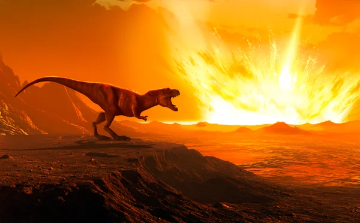
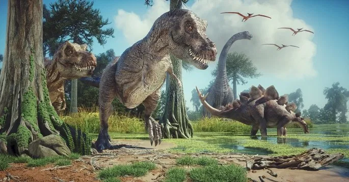
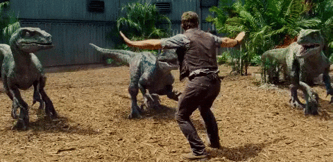
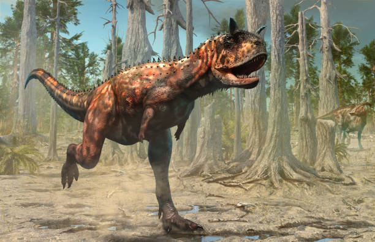
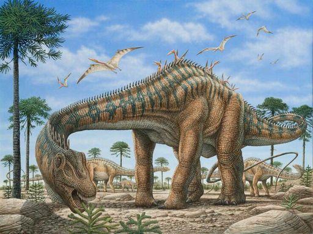
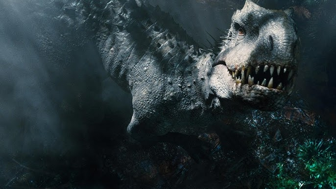

1. Qual desses animais é considerado um descendente direto dos dinossauros?
2. O que causou a extinção dos dinossauros, segundo a teoria mais aceita?

3. Qual era geológica é conhecida como a “Era dos Dinossauros”?

4. Qual dos seguintes dinossauros era carnívoro?

5. Qual o nome desse dinossauro?

6. Qual é o nome do dinossauro herbívoro com pescoço longo, corpo esguio e cauda muito comprida, que vivia em bandos e era conhecido por seu tamanho impressionante?

7. Em “Jurassic Park”, qual dinossauro escapa primeiro e causa problemas?
8. No filme “Jurassic World”, qual é o nome do dinossauro híbrido criado em laboratório?

9. Qual o nome do dinossauro que aparece nessa cena de “Jurassic Park”?
10. Qual desses dinossauros é atualmente considerado o maior predador carnívoro que já existiu?